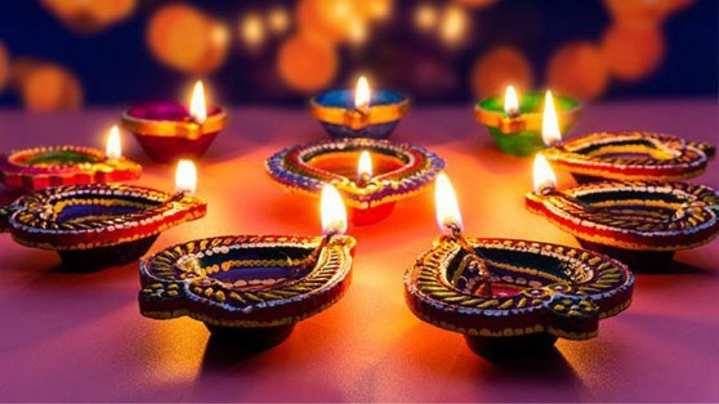

DIWALI
Diwali, also known as Deepavali, is one of the most significant and widely celebrated festivals in India and among Hindus worldwide. This festival of lights marks the triumph of light over darkness, good over evil, and knowledge over ignorance, and it holds immense cultural, religious, and social significance.
Diwali falls on the fifteenth day of the Hindu lunar month of Kartika, typically in October or November. The festival extends over five days, with each day having its own set of rituals and customs. The third day, known as Amavasya or the new moon day, is the main day of celebration.
The most iconic aspect of Diwali is the lighting of oil lamps, called "diyas," and decorative lights, which symbolize the victory of light over darkness. Houses, streets, and public spaces are adorned with these illuminated decorations, creating a stunning and vibrant spectacle.

The religious significance of Diwali varies across different regions and communities, but it is generally associated with a range of legends and deities. In the northern part of India, Diwali is linked to the return of Lord Rama after defeating the demon king Ravana, while in the southern states, it commemorates Lord Krishna's triumph over the demon Narakasura.
The exchange of gifts and sweets, cleaning and decorating homes, preparing special dishes, and bursting firecrackers are common customs during Diwali. Families come together to pray, perform religious rituals, and seek blessings for a prosperous and harmonious life.
Diwali is also a time for forgiveness and reconciliation, emphasizing the importance of mending broken relationships and starting anew. Charity and acts of kindness are encouraged, and many people share their wealth and blessings with those less fortunate.
In summary, Diwali is a festival that radiates with light, happiness, and positivity. It transcends religious boundaries, bringing people of various faiths together to celebrate the values of goodness, unity, and the triumph of light over darkness. The festival's brilliant display of lights and colors, along with its rich traditions and symbolism, make it an enchanting and heartwarming celebration that holds a special place in the hearts of millions.